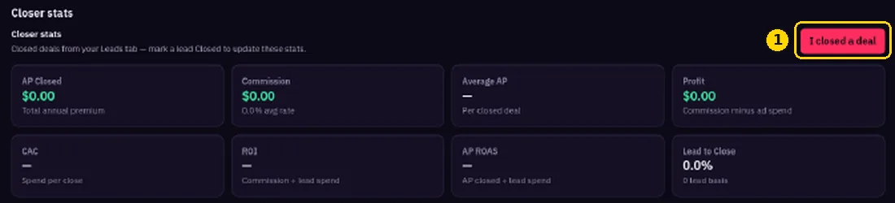

Tracking Closes and ROI
Record your sales and see your real return.
- Click I closed a deal on https://members.fomoleads.io/dashboard. You can also mark a lead closed in https://members.fomoleads.io/leads.

- Your dashboard updates your closer stats: AP Closed, Commission, Average AP, Profit, CAC, ROI, AP ROAS and Lead to Close.
Using GoHighLevel?

Your pipeline stages and AP can sync back automatically. See GoHighLevel disposition sync.